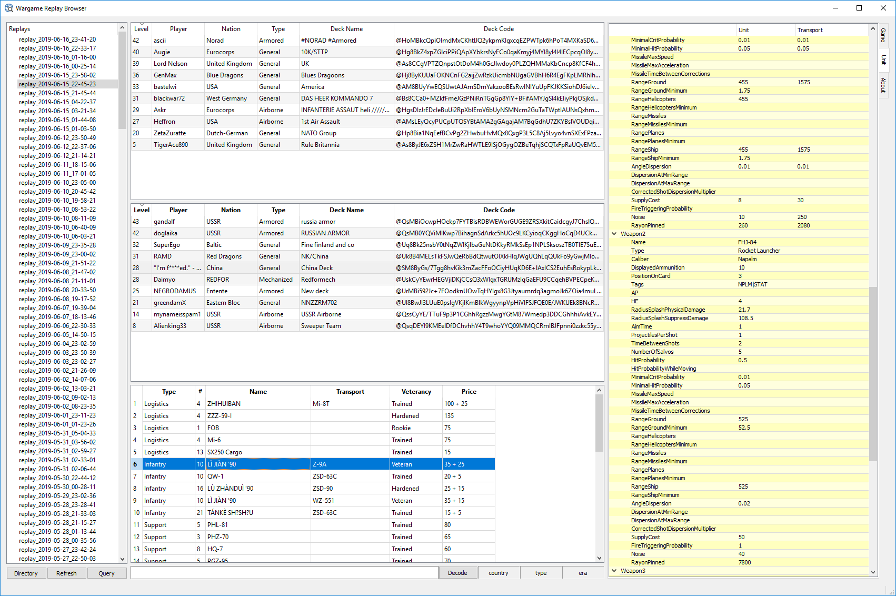

qReplay
qReplay is an offline replay browser for Wargame Red Dragon. It will show what deck is used by players by parsing replay files.
This is usefull for example if you want to learn of new decks. It also shows deck names, user levels and some lesser used stats. A newer version also shows some of the weapon stats. I’ve not released it since I find the armory by user throwaway to be a bit more usefull for that.

You can find releases and source on github ofcourse, report any bugs there.